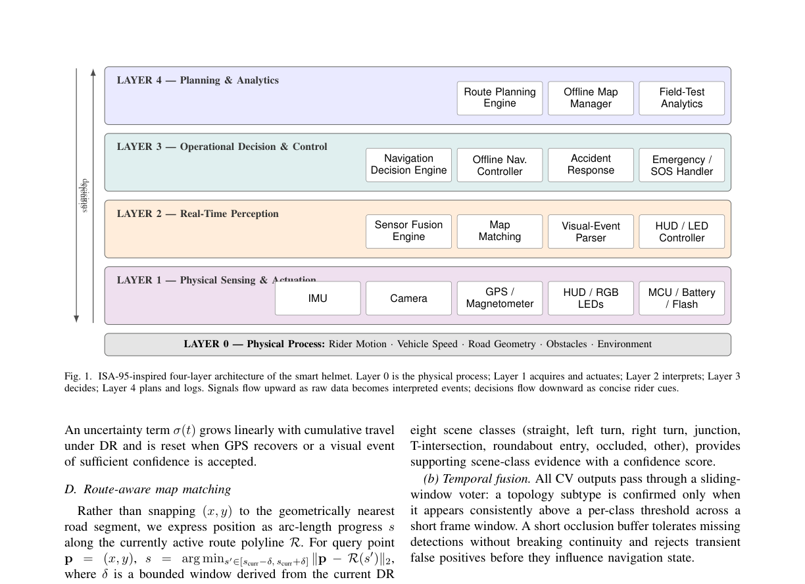
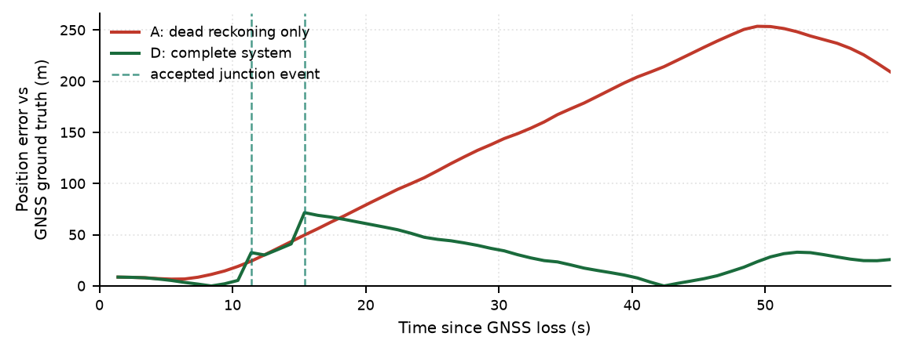

A Smart Helmet for Offline Navigation Using Hybrid Dead-Reckoning and Vision-Based Road-Feature Route-Pointer Correction
Wearable prototype for GNSS-denied navigation on two-wheelers
GNSS fails in tunnels, flyovers, dense urban roads, and network-constrained areas. This paper presents a wearable smart-helmet system that maintains accurate navigation continuity when GPS goes dark. The core idea: treat road features detected by a forward-facing camera as semantic correction events for a Dead Reckoning route pointer, rather than building a full localisation system from scratch. The helmet is a systems-integration contribution, not an algorithmic novelty claim.
Computer Vision Output
Road Topology Detection in Practice
The CV pipeline detects navigation-relevant road features from a forward-facing camera and emits structured events for turns, junctions, forks, and roundabout entries. At this T-junction the LR-ASPP-MobileNetV3 segmentation produces a 27-class IDD mask; the TinySceneCNN classifier confirms the topology at 0.99 confidence. Road coverage 31.4%. These events act as correction anchors that reset accumulated Dead Reckoning drift.

Architecture
ISA-95 Four-Layer System Design
Following the layered-plant view that ISA-95 uses for industrial automation, the smart-helmet software is organised into four cooperating layers that separate what is being sensed from how a decision is presented to the rider. The layered contract enables independent evolution of each layer: the segmentation model can be swapped without touching the navigation decision engine, and the BLE packet layout can be validated in isolation from the CV stack.

Methods
How Navigation Works Without GPS
The system maintains a route pointer over cached OpenStreetMap data: a sequence like START → STRAIGHT → LEFT-TURN → T-JUNCTION → RIGHT-TURN → DESTINATION. Two complementary signals advance this pointer. Dead Reckoning propagates position using arc-length distance from IMU readings. The CV module fires correction events when it confirms the next expected road feature, snapping the pointer and resetting accumulated DR drift. The system has three explicit modes: ONLINE, OFFLINE, and DEGRADED, so the rider always knows which evidence stream is being trusted.
A complementary filter fuses accelerometer tilt estimates with gyroscope heading. Position propagates forward: v(t) = v(t-1) + (a - g sinθ)Δt. An uncertainty term σ grows linearly with cumulative travel and resets when a visual correction event is accepted. Moving-window smoother rejects heading spikes above a configured threshold.
LR-ASPP-MobileNetV3-Large (IDD dataset, 27 classes) produces a drivable-road mask per frame. A BEV transformation + skeleton graph extracts turn topology. TinySceneCNN classifies 8 scene types (straight, left-turn, right-turn, junction, T-intersection, roundabout, occluded, other). A temporal sliding-window voter requires consistent detections before firing a correction event.
Rather than nearest-neighbour map snapping, position is expressed as arc-length progress along the cached route polyline. This rules out physically implausible jumps to parallel roads in dense urban layouts. When a visual event arrives within the DR uncertainty window, the pointer snaps to the expected junction coordinates and σ resets.
ONLINE uses live GPS. OFFLINE activates when GPS accuracy degrades: DR + CV + cached OSM take over. DEGRADED activates when DR uncertainty exceeds a threshold with no CV events arriving. All transitions are explicit and surfaced in the React Native mobile UI so the rider always knows the current guidance confidence.
Hardware Protocol
Compact 8-Byte BLE Packet
Rider-critical state is transmitted as fixed-size 8-byte BLE packets between the ESP32 helmet controller and the mobile app. Constant-time parsing over a bounded payload, fits inside the BLE 4.x 20-byte MTU with headroom, and keeps helmet CPU work to interpreting a small typed message set on an ESP32-class MCU (nominal active-power 150-500 mW).
The ESP32 emits six HUD/LED command states from received packets: LEFT_PREPARE and RIGHT_PREPARE (slow yellow blink on approach), LEFT_NOW and RIGHT_NOW (solid yellow plus green chase on execution), HAZARD (both-side fast blink on crash / off-route / GNSS blackout), and ARRIVED (both-side slow green blink at destination).
Experiments
Evaluation Results
Evaluation targets module correctness, integration readiness, and runtime suitability rather than large-scale benchmark reporting. The test suite covers 138 tests across three modules. The five failing tests are in the navigation API-service suite and represent unresolved expectations around degraded-mode transitions; they are reported honestly rather than suppressed.
Table II: Module-wise Unit Test Results
| Module | Passed | Total | Pass Rate | Notes |
|---|---|---|---|---|
| Communication | 24 | 24 | 100% | Encoding, queue, ACK, retry, sync stable |
| Localisation | 25 | 25 | 100% | DR, heading tracker, map-match, fusion stable |
| Navigation | 84 | 89 | 94.4% | Core route logic passes; 5 API expectations open |
| Total | 133 | 138 | 96.4% | 5 failing tests tracked as known issues, not suppressed |
Table III: Scenario Test Matrix (all passing)
| TC | Scenario | Expected Outcome | Result |
|---|---|---|---|
| TC1 | Encode/decode valid packet | Round-trip succeeds | PASS |
| TC2 | Corrupted checksum | Packet safely rejected | PASS |
| TC3 | Repeated sequence | Duplicate ignored | PASS |
| TC4 | DR update without valid IMU | No invalid position | PASS |
| TC5 | Heading spike over threshold | Rejected; smoothed heading kept | PASS |
| TC6 | Map-match far from route | No false segment returned | PASS |
| TC7 | Connectivity transition offline | Localisation state emitted | PASS |
| TC8 | Route-cache request after load | Cache available offline | PASS |
| TC9 | Helmet heartbeat | Sync state kept active | PASS |
| TC10 | Mobile demo step progression | Instruction/mode/position update | PASS |
Fig. 2: Single-Run Ablation Trace

Table IV: Ablation Across Four Localisation Configurations (20 seeded runs)
| Metric | A: DR only | B: DR + Map Match | C: DR + CV | D: Full System |
|---|---|---|---|---|
| Peak true pos. error (m) | 21.95 | 18.58 | 29.37 | 18.97 |
| Std | 2.51 | 2.00 | 3.02 | 1.96 |
| Max drift between corrections (m) | n/a | n/a | 26.56 | 13.10 |
| Peak DR uncertainty σ (m) | 14.38 | 14.38 | 6.51 | 6.51 |
| Turn detection rate | — | — | 92.5% | 92.5% |
| False corrections / min | — | — | 0.56 | 0.56 |
| Recovery to first correction (s) | — | — | 19.0 | 19.0 |
Key finding: map matching alone (B) gives a 15% peak-error reduction over pure DR (18.6 vs 21.9 m) but cannot correct longitudinal drift. Visual correction alone (C) has asymmetric risk: it works well on clean runs but fails worse than DR when a junction is missed. The full system (D) captures the strengths of both, cutting max drift between corrections by 51% versus CV alone and by 40% versus pure DR.
Performance
System Footprint and Latency
The perception stack is deliberately mobile-edge sized. CV inference runs on a laptop-class CPU with no GPU acceleration; all latencies are comfortably below the sub-second window a rider needs before a maneuver.
Stack
Implementation
| Component | Technology | Role |
|---|---|---|
| Segmentation | LR-ASPP-MobileNetV3-Large | 27-class IDD semantic segmentation. Produces drivable-road mask per frame; BEV + skeleton graph extracts turn topology. |
| Scene Classification | TinySceneCNN | 8 scene classes (straight, left-turn, right-turn, junction, T-intersection, roundabout, occluded, other). 98,664 params, 407 KB checkpoint. |
| Dead Reckoning | Complementary filter (Python) | Fuses 6-axis IMU accelerometer + gyroscope. Propagates position between visual correction events. Uncertainty term σ resets on accepted CV events. |
| Map Matching | OSRM / Google Routes + cached OSM | Routes decoded and cached locally as polylines. Arc-length progress matching rules out parallel-road jumps. |
| Mobile App | React Native | Connects to helmet via BLE. Runs navigation, DR, and route logic on cached OSM assets. Explicit ONLINE / OFFLINE / DEGRADED mode UI. |
| Navigation Server | Python FastAPI | Hosts CV inference, DR computation, and navigation endpoints. Round-trip 1.25/1.62 ms mean/p95. |
| Helmet Controller | ESP32 (C/C++) | Packages telemetry into 8-byte BLE frames. Drives LED matrix + HUD from 6 command states received from the mobile app. |